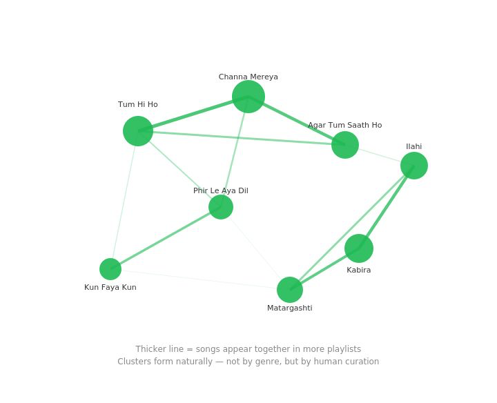

Your listening data is lying about you
How Spotify built Discover Weekly by ignoring the obvious data and tracking taste instead
You stream death metal at the gym. Kishore Kumar on the drive home. Lo-fi beats at 2 AM and some Arijit Singh when no one's watching. If an algorithm tried to figure out who you are from this, it would have a nervous breakdown.
Yet one company built a billion-dollar feature by solving this exact problem — not by collecting more listening data, but by ignoring it.
The noise
Every music platform in the early 2010s was chasing the same ghost. They tracked every stream, logged every skip, and tried to map similarities based on passive behaviour.
The problem? Streaming is messy. It's context-dependent.
You don't stream the same music heartbroken at midnight and cooking Sunday lunch. Your stream history doesn't describe your taste — it describes your week.
Most companies thought the answer was just more data. More features, heavier ML, more noise reduction.
The signal
Spotify took a different path. They stopped tracking what people consumed and started watching what people created.
Not the algorithmic playlists — the ones you made. The ones where you dragged songs in, agonised over the order, and named it something only you understand.
When you make a playlist, you're not just listening. You're making a decision. You're saying "these songs belong together."
And the best part — you don't even know you're doing it. No one curates a playlist thinking "I'm revealing my taste." You're just vibing. But that unconscious act of putting songs together says more about you than a year of streaming data ever could.

Thicker line = songs appear together in more playlists. Clusters form naturally — not by genre, but by human curation.
The action
Spotify trained their model on 700 million of these human-curated playlists.
If Channa Mereya and Tum Hi Ho appear together in thousands of playlists made by strangers, that co-occurrence is the truth. The algorithm isn't guessing your mood — it's leveraging collective human intent.
That insight became Discover Weekly. Launched in 2015. 100 million unique playlists generated every Monday. Users went into an existential crisis when it didn't update one week.
Matt Ogle, the PM behind it, described the engine as powered by all the curatorial actions of people on Spotify adding to playlists.
Not streams. Not likes. What people chose to build.